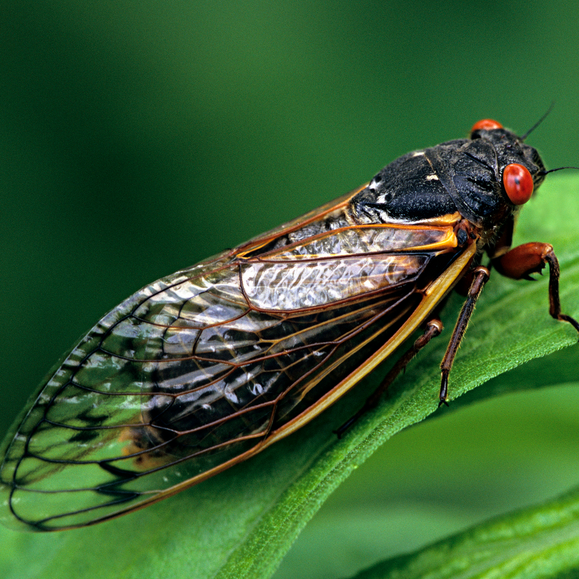

Cicadas are insects with stout bodies, broad heads, clear-membrane wings, and large compound eyes, according to National Geographic.
There are more than 3,000 cicada species—some show up every 13 to 17 years, while others emerge every year when the weather gets warm.